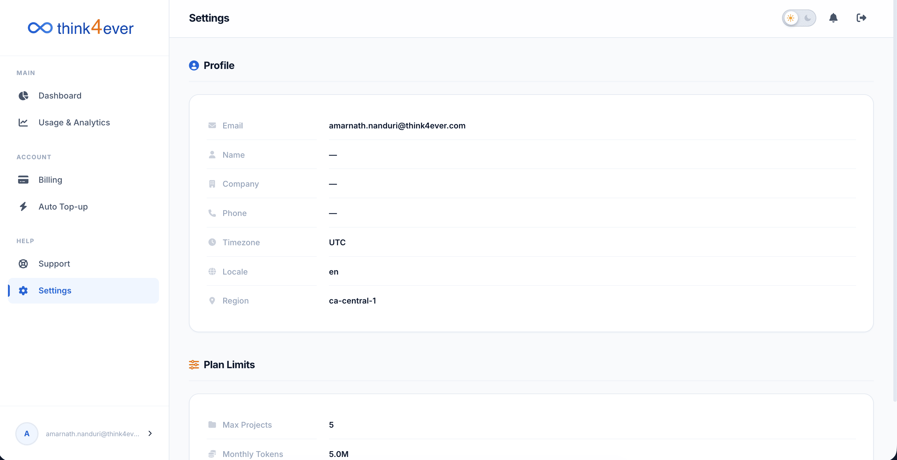

Settings
The Settings dashboard allows you to manage your personal profile attributes, view global system environment configurations, and audit your core account tier capacity restrictions.

Profile Information Module
This card displays your active identity details and localized server environment variables:
- Email: The primary registered email address utilized for system access, critical billing alerts, and infrastructure alerts (e.g., amar.nanduri2@moadbus.com).
- Name: Your custom profile display name (defaults to an empty state — if not manually configured). populates with an interactive table tracking ticket IDs, categories, dates created, and live resolution statuses.
- Company: The name of your corporate workspace or enterprise group (defaults to an empty state — if unconfigured).
- Phone: Optional contact number for account communications or voice security verifications.
- Timezone: The standardized baseline time zone used to synchronize your dashboard charts and usage logs (e.g., UTC).
- Locale: The preferred default interface language setting for your user profile text (e.g., en for English).
- Region: The backend geographic data center cluster hosting your active development server pipelines (e.g., ca-central-1).
Plan Limits Module
This card outlines the maximum execution ceilings dictated by your active subscription tier:
- Max Projects: The hard threshold limit of separate, concurrent workspaces or active development branches allowed on your account (e.g., 5). If you hit this limit, you must delete an idle project or upgrade your tier before initializing a new build.
- Monthly Tokens: The maximum allotment of processing credits included per calendar billing cycle (e.g., 5.0M tokens). Keep an eye on this baseline alongside your Usage & Analytics matrix to plan manual top-ups or tier modifications accordingly.